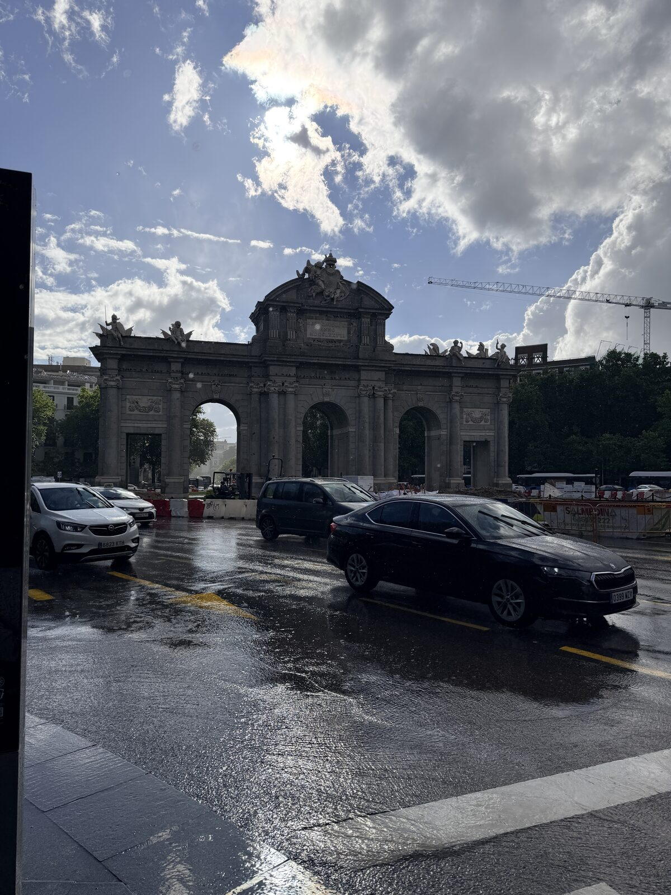
Puerta de Alcalá · 雨停的瞬間 · 雲彩虹剛好出現
Day 5 是慢散步,Day 6 是 被雨追著走。
但每次雨停,都剛好站在馬德里的地標前 ——
從 Galería Canalejas 的旋轉樓梯,到阿卡拉門上方的雲彩虹。
早晨從 Malasaña 區出發,走進 Calle del Acuerdo —— 整條街是奶油黃色的老公寓配藍色路名牌,Frutería Vitaminas Noviciado 9 的西瓜招牌掛在轉角,門口擺著番茄、朝鮮薊、蘑菇 —— 馬德里巷弄的標準早晨。
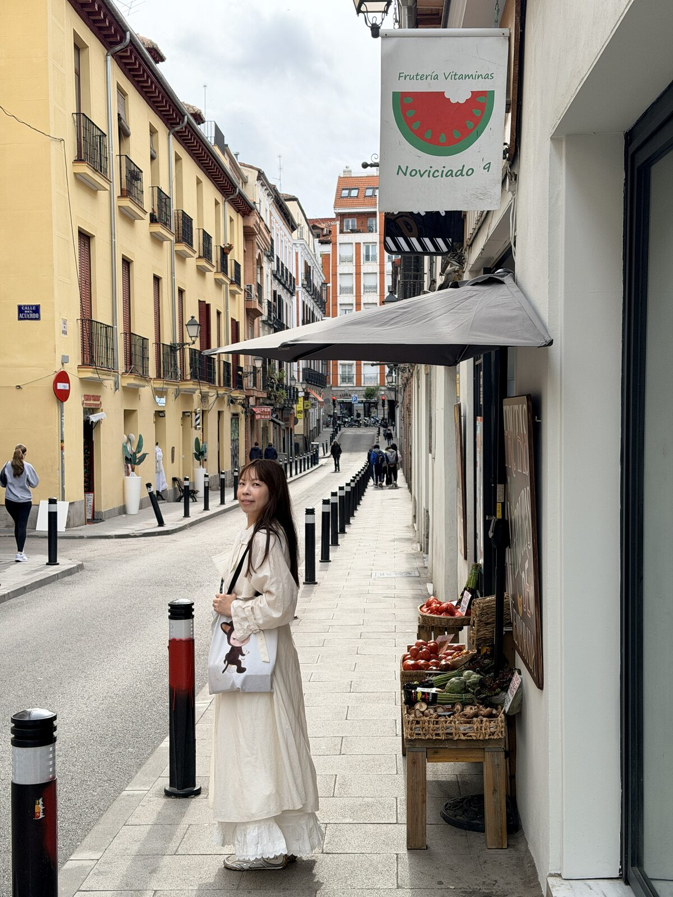
目的地是 Billy Brunch —— Fuencarral 街上的人氣早午餐,招牌是黑色小雞 logo(取名自雞,品牌標語 *Breakfast All Day Every Day*),門口立著菜單牌、紅色木門、米色遮陽棚 —— 北歐感 + 西班牙骨架。
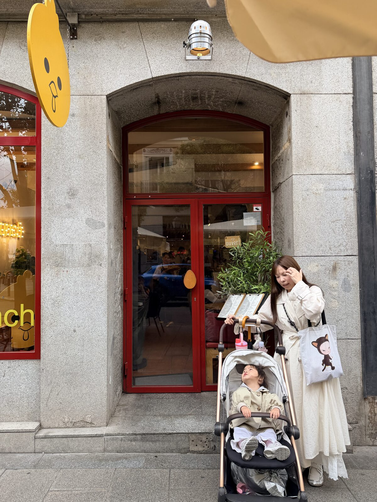
主餐是厚切美式鬆餅塔 + 草莓 + 糖粉 + 楓糖漿,旁邊一杯橘黃色 Zahraa' Smoothie 插著小紙傘,還配了一碗烤馬鈴薯塊 + 一坨酪梨醬。一桌都是視覺戰力,小米直接伸手抓鬆餅 —— 動作比眼神還誠實。
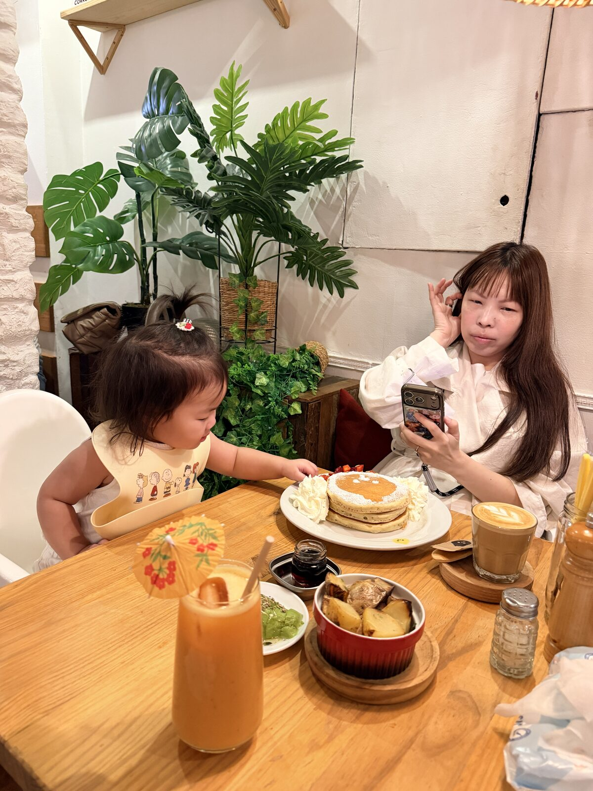
店家用黃色小雞貼紙 + 紙漿雞蛋盒當外帶包裝,小米一看到整個眼睛發亮,伸手過去搶 —— 連大人也想拿來收藏。Billy Brunch 把品牌做進每一個細節,難怪西班牙小孩都愛。
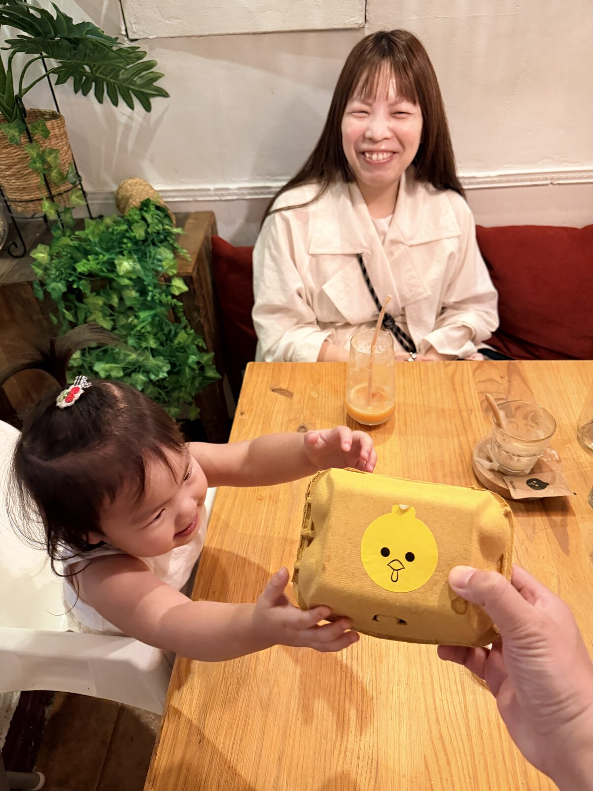
| 品項 | 備註 | 價格 |
|---|---|---|
| Con Leche + Sirope Caramelo | 焦糖拿鐵 | 4,00 € |
| Zahraa' Smoothie | 招牌奶昔 | 5,30 € |
| Pancake Sirope | 草莓糖漿鬆餅 | 10,90 € |
| Extra Patatas | 烤馬鈴薯 | 3,90 € |
| Extra Avocado | 酪梨醬 | 3,90 € |
| Total | (含 IVA 10%) | 28,00 € |
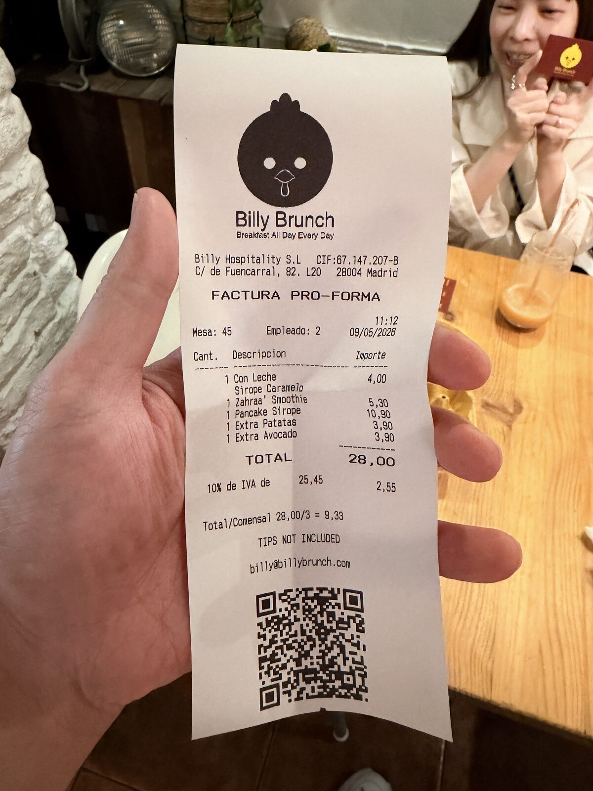
吃完 brunch 走出來,馬德里的天空開始下雨。Day 5 也是這樣 —— 馬德里 5 月的雨,說來就來。
沿著 Gran Vía 走,SAN ISIDRO 2026 旗幟掛在路燈上(馬德里守護神節,5/15 開始);Big Bus Madrid 雙層觀光巴士濕漉漉地停在站牌邊,撐著彩虹半透明傘的媽媽站在反光路面正中間 —— 雨後 Gran Vía 的色票:濕亮路面 + 米黃古蹟 + 赭紅雙層巴士。
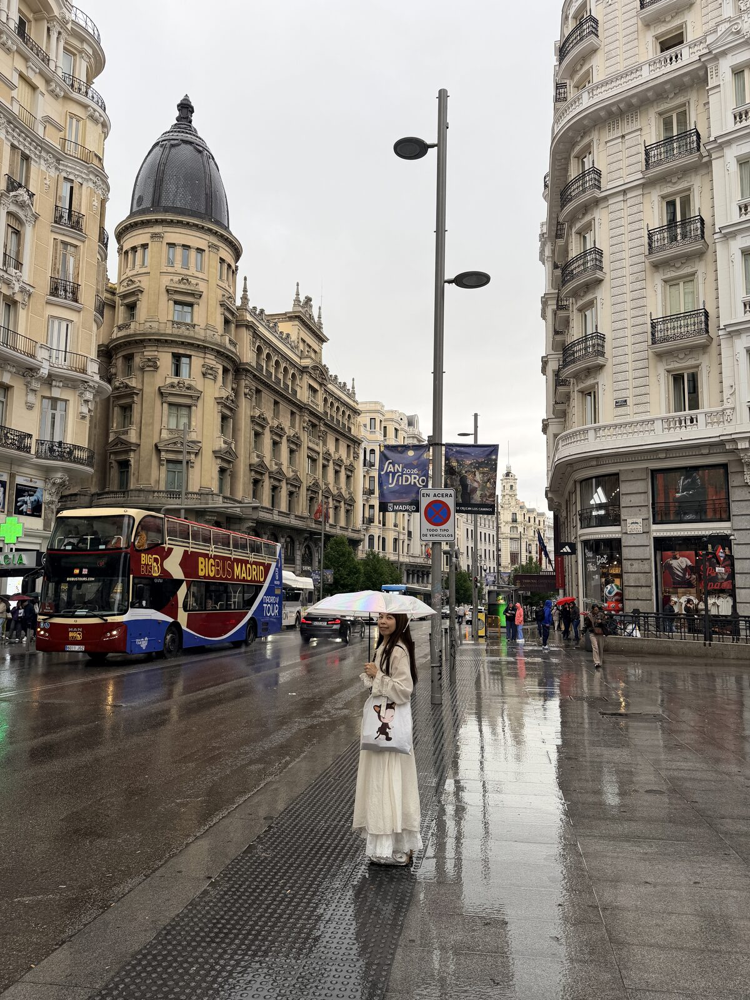
Calle de Alcalá 方向則是另一個畫面:整條大道被雨清空,中央一根古典燈柱對著鉛灰色的雲,遠方依稀看到 Cibeles 廣場 + Banco de España 的圓頂。
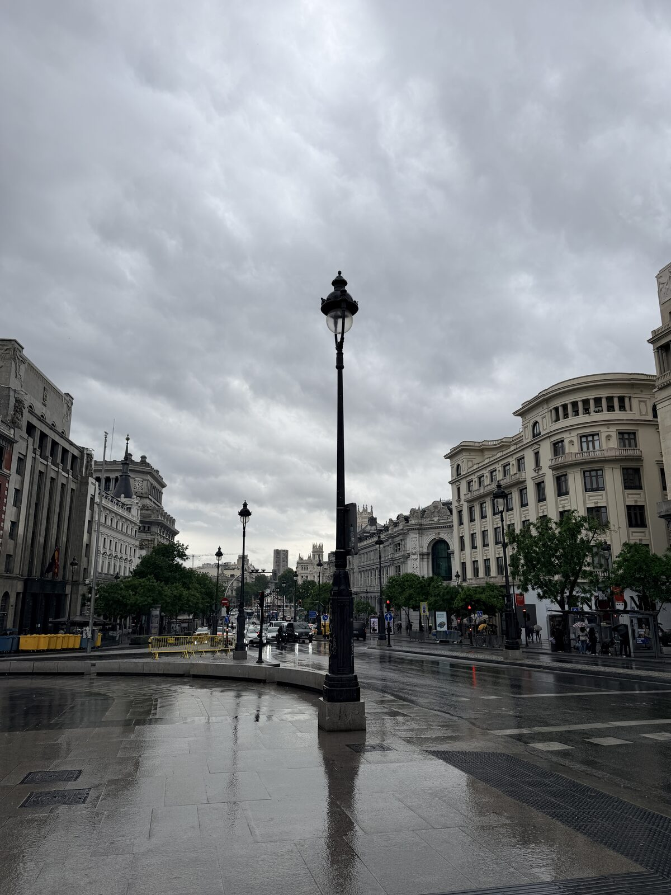
5 月的馬德里,雨從不打招呼。
但雨帶你進去的地方,通常是雨天才會發現的好地方。
下大雨,直接閃進最近的建築 —— 結果是 Galería Canalejas,馬德里 2021 年才開幕的頂級購物藝廊。整棟是 7 棟 19–20 世紀古蹟銀行大樓合體改建,工程花了將近 10 年 + 6 億歐元,是西班牙史上最貴的不動產開發案。
同一棟樓裡是 Four Seasons Hotel Madrid + Hermès 旗艦店 + LV + Cartier + Rolex。我們從「躲個雨吧」秒升級成「躲到全西班牙最頂飯店」。
藝廊中庭懸掛著整片薄荷綠紙鶴 + 旋轉木造樓梯,中央就是 La Pajarita Madrid 1852 快閃櫃 —— 馬德里最古老的糖果店,174 年歷史,比可口可樂還老。Tiffany 綠 + 金字 + 紙鶴是品牌視覺三件套,「Pajarita」西文意思就是「紙鶴 / 領結」。
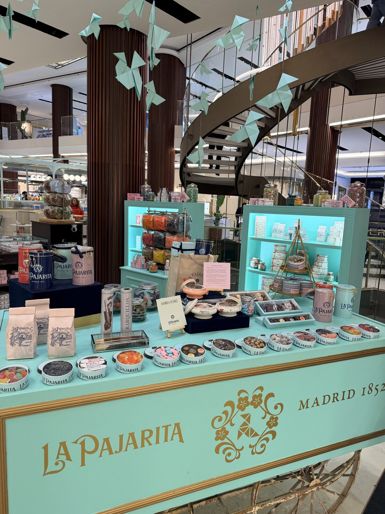
Plot Twist:1852 年的傳奇 + 紙鶴美學滿分 ——
試吃了長條草莓跟椰子糖,
老實說...買不下去。
顏值跟味道,有時候是兩條平行線。
LV 馬德里旗艦店的櫥窗是「Louis Vuitton Jouets(玩具系列)」主題:Monogram 牆 + 6 層架 + 全部都是『搬 LV 行李的小玩具』 —— 黃衣推車工人、紅色復古車、藍制服 bellboy 推紅色行李推車、摩托車邊車、Vespa、Citroën HY 廂型車。
整面牆講同一個故事:LV 從 1854 年起家做的就是硬殼旅行箱,給歐洲皇室搬家用 —— 這面櫥窗是品牌史濃縮版。
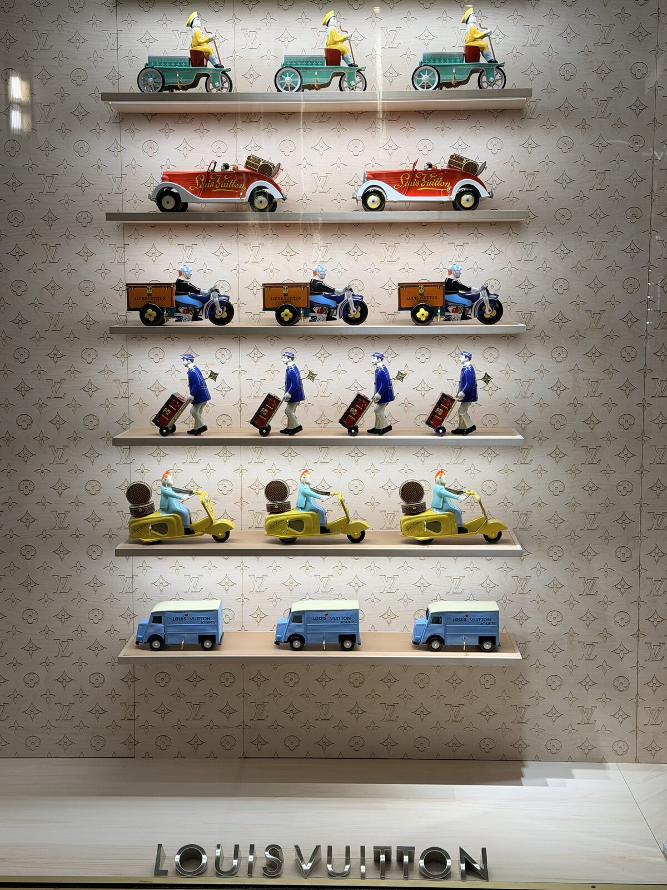
走出藝廊往轉角看,整棟大樓本身就是建築傑作。Edificio La Equitativa(1891) —— 洋蔥頭塔頂 + 金色雕像 + 大時鐘。一樓那些大象石雕頭 🐘 是建築原始裝飾,因為原本的銀行(Banco Hispano Americano)logo 就是大象,代表力量與長壽。
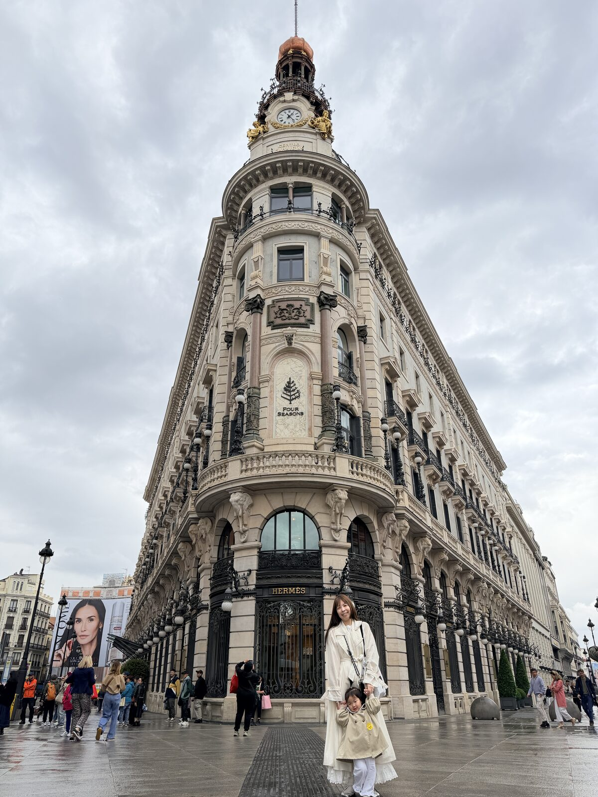
不是「找個騎樓避一下」的躲雨 ——
是「走進西班牙最貴的不動產 + 全城最頂飯店」的躲雨。
馬德里的雨,有時候會把你推向最意外的地方。
從 Galería Canalejas 沿 Calle de Alcalá 往北走 5 分鐘,就到了馬德里最常被拍的建築 —— Edificio Metropolis(梅特羅波利斯大樓)。
1907–1911 年由法國建築師兄弟 Février 設計,布雜藝術風格 + 科林斯式列柱 + 寓言雕像。原本是 La Unión y el Fénix 保險公司總部,1972 年被 Metropolis 保險公司買下,所以才叫這個名字。
頂端那座黑色雕像是 Victoria Alada(勝利女神),1975 年才換上去的;之前是隻鳳凰 + 一個男人(舊保險公司的 logo)。馬德里人把它當成 Gran Vía 的守護神。
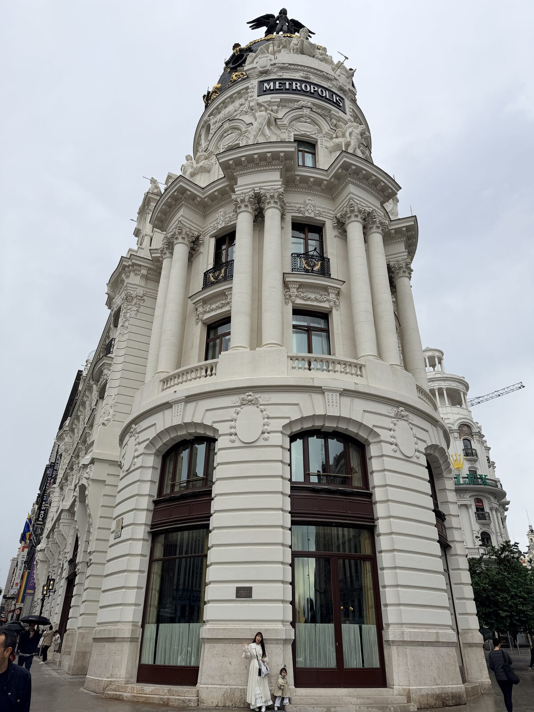
跟 Centro Canalejas 的洋蔥頭塔尖合稱 "Las Dos Coronas de Madrid"(馬德里的雙王冠) —— 一棟午餐前拍,一棟午餐後拍,今天等於蒐集了一對。👑👑
沿路經過 Vinitus Gran Vía 4 —— 黑白極簡 logo + 米石老建築,Metropolis 的倒影剛好映在玻璃上。Vinitus 是巴塞隆納起家的 tapas 名店,馬德里這間是分店,位置就是「Gran Vía 的第一棟」,等等就在這裡解決午餐。
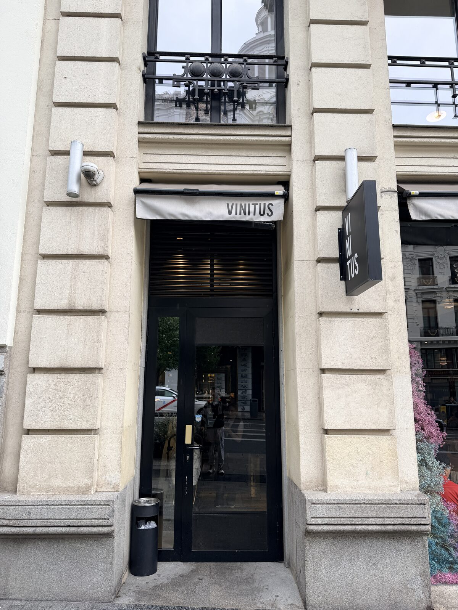
昨天連吃了好幾天的 Jamón Ibérico,晚上爆出嚴重蕁麻疹 —— 火腿、香腸、紅酒、起司全部跳過(都是高組織胺地雷)。所以今天 Vinitus 的點菜邏輯是:沒火腿、沒蝦蟹、沒酒、沒暴怒蛋。
第一輪三道:炸朝鮮薊(Alcachofas Fritas) 5 月當季,輕酥不膩;炙燒酪梨(Guacamole a la Brasa) 整顆酪梨炙烤後挖肉拌 pico de gallo,留外殼當盛器,Vinitus 招牌之一;鐵板竹蟶(Navajas a la Plancha) 鮮甜彈牙 + 巴西利醬 + 檸檬,小米可以吃。
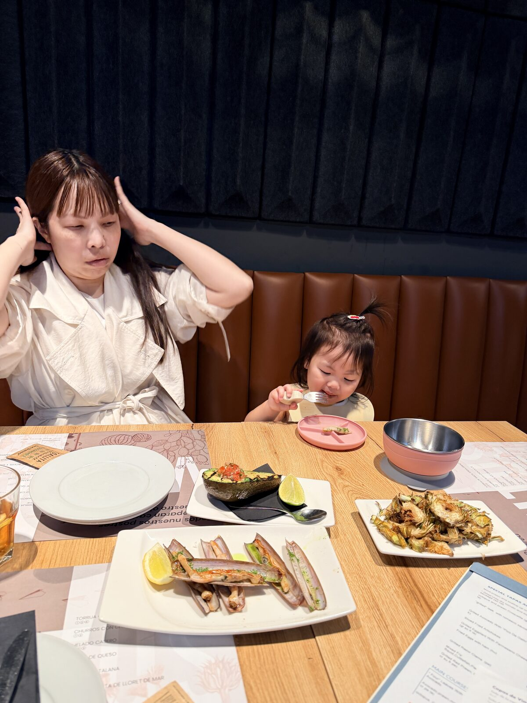
第二輪:2 個 Mini Hamburgues 迷你牛肉漢堡(3,65 €/個),麵包夾肉排 + 起司,旁邊番茄醬擠成兩個小愛心 —— 小米眼睛盯著漢堡那張根本是全桌最有戲。
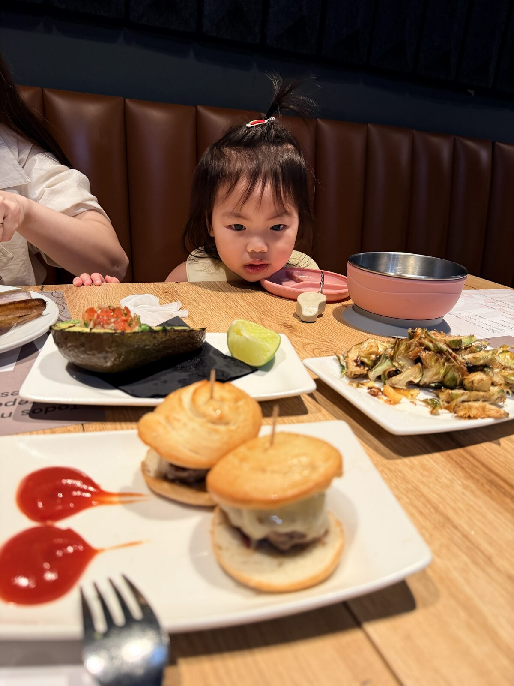
整桌的 hero dish 是 Bacalao Allioli con Miel(蜂蜜鱈魚) 14,10 € —— Day 3 在巴塞 Vinitus 本店點過(14,15 €),Day 6 在馬德里再點一次做城市對照組。
結論:巴塞的比較好吃。海港城市新鮮度的優勢,內陸首都複製不了。但馬德里這版也不差,一樣甜鹹平衡入口即化。
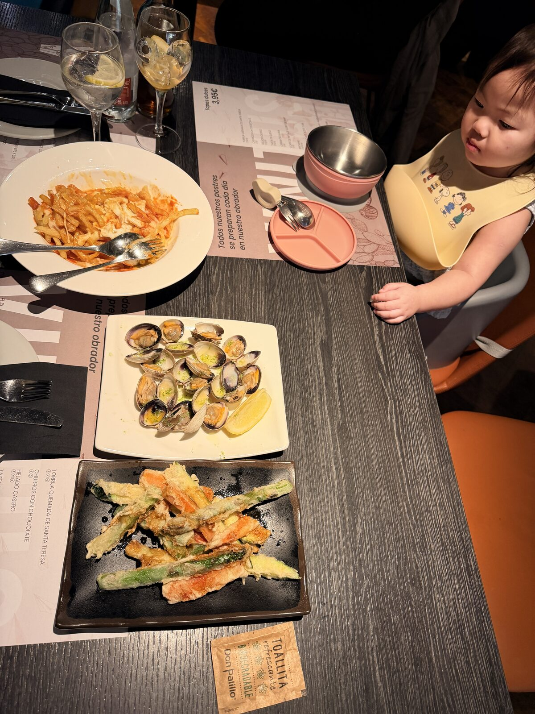
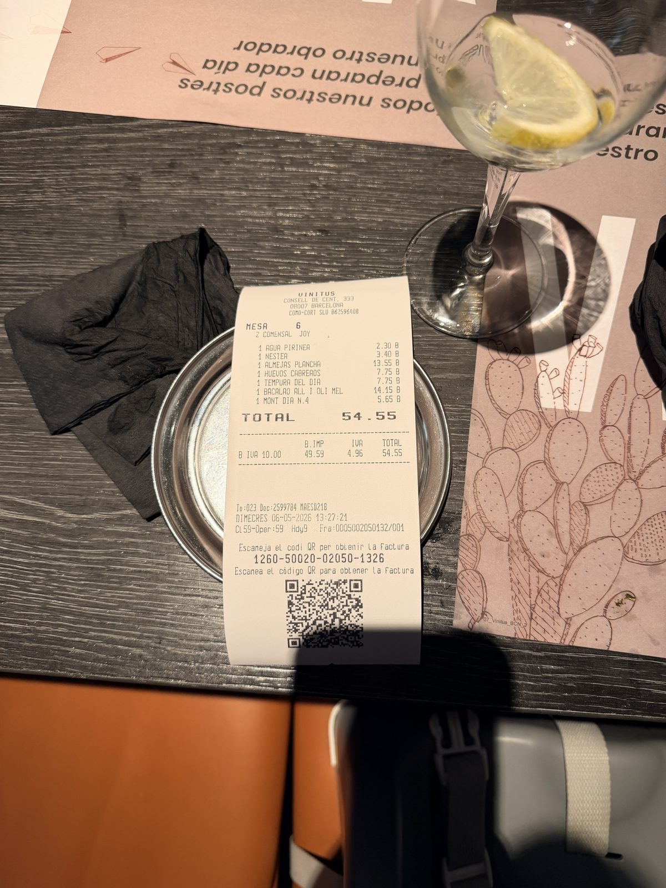
結尾甜點是 Churros con Chocolate 3,95 € —— Day 5 在 San Ginés 吃過,Day 6 在 Vinitus 又一份。母女同時把吉拿棒沾進巧克力那張根本是 Day 6 的 hero shot。
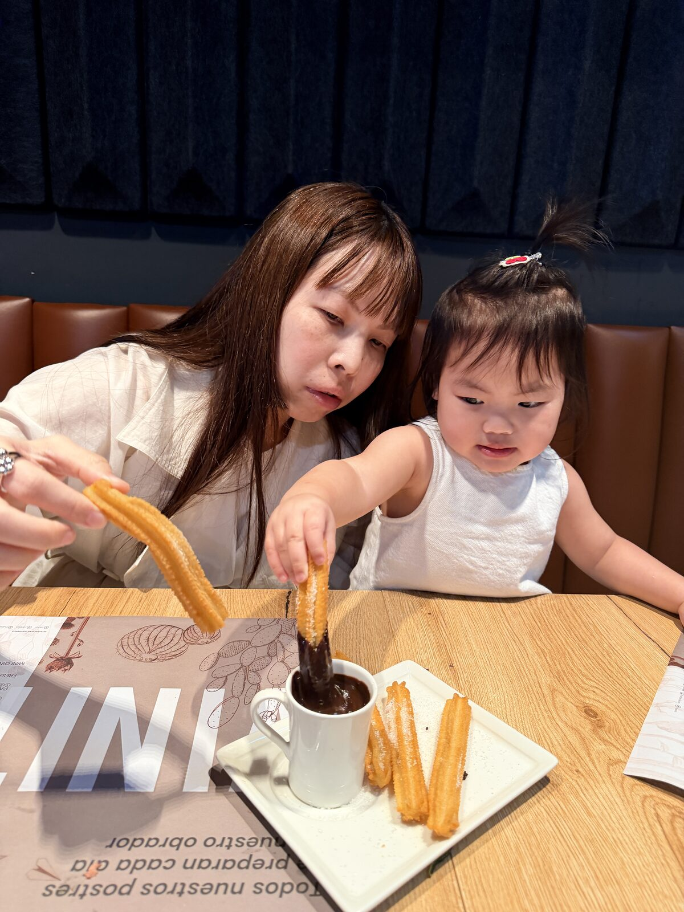
| 品項 | 備註 | 價格 |
|---|---|---|
| 2× Mini Hamburgues | 迷你牛肉漢堡 | 7,30 € |
| Alcachofas Fritas | 炸朝鮮薊 | 7,60 € |
| Guacamole a la Brasa | 炙燒酪梨 | 5,60 € |
| Navajas | 鐵板竹蟶 | 11,85 € |
| M Solomillo Ternera | 迷你牛菲力 | 5,90 € |
| Bacalao Allioli Mel | 蜂蜜鱈魚 ⭐ | 14,10 € |
| Churros con Chocolate | 巧克力吉拿棒 | 3,95 € |
| Nestea | 冰紅茶 | 3,50 € |
| Total | (含 IVA 10%) | 59,80 € |
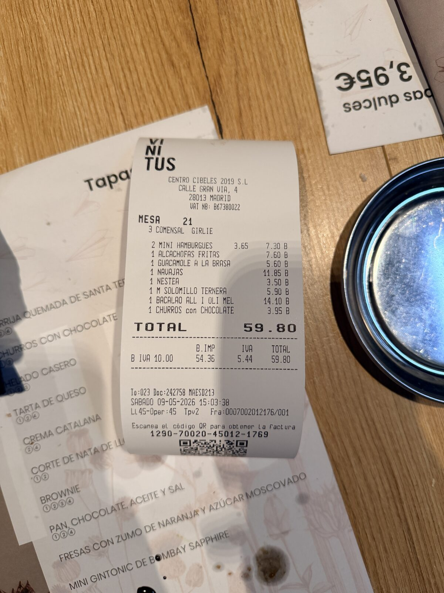
Day 3 巴塞 · Vinitus 本店 · 14,15 €
Day 6 馬德里 · Vinitus 分店 · 14,10 €
同一道鱈魚,兩座城市,價格差 5 cents,味道差一截。
連鎖店「老家比較好吃」是萬國共通的真理。
吃飽往南走,雨剛好停,我們進了馬德里最有名的露天舊書街 —— Cuesta de Claudio Moyano。位置在 Retiro 公園南邊的緩坡上,1925 年開業至今 101 年。
整排紅白條紋木造小書攤 ×30 間,賣絕版書、初版書、舊海報、漫畫。西班牙文豪們(Lorca、Hemingway、Borges)都來逛過,我們拍到的招牌是「GALAXIA DEL LIBRO」。
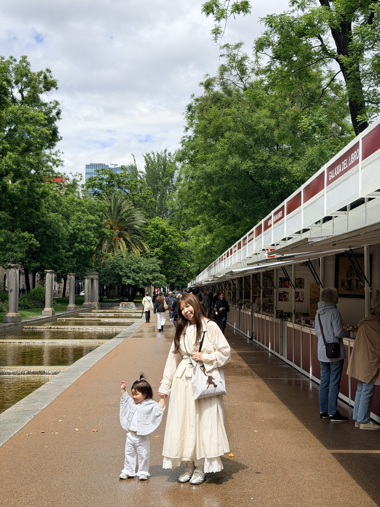
左邊那排階梯式水池是 Retiro 公園邊緣的 Cascada del Parterre,雨後反光在地面 —— 整個畫面像 Sofia Coppola 的歐洲電影開場。
從書街折返,沿著 Calle de Alfonso XII 那條空蕩蕩的林蔭大道 —— 雨後出大太陽,藍天白雲,遠方拱門就是 Puerta de Alcalá。一邊散步一邊穿過 La Milla de Oro(黃金哩),馬德里最頂的精品大道。
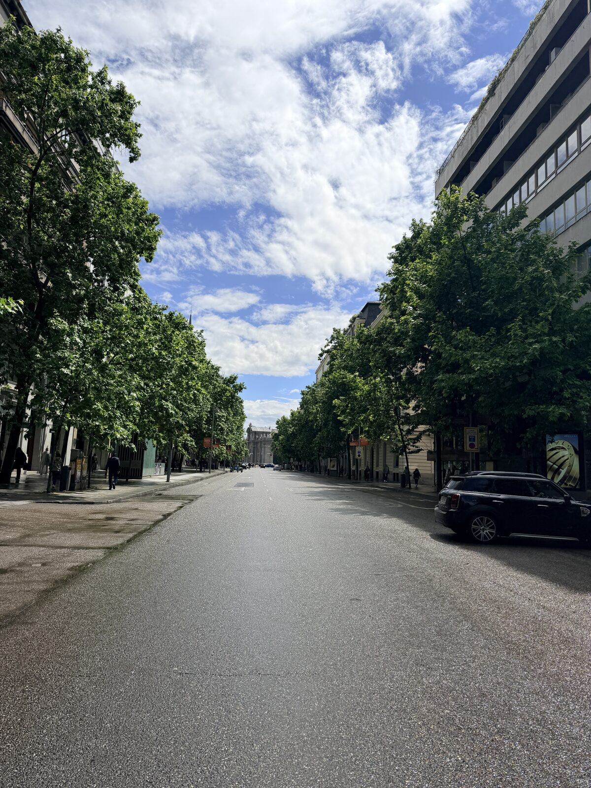
深藍丹寧棒球帽 + 灰色 logo cap,Miu Miu 童裝系列。小米仰頭抱著架子那個動作 —— 「我構不到但我想要」的視覺敘事,跟 Day 5 在 Billieblush 失守是同一條 DNA。
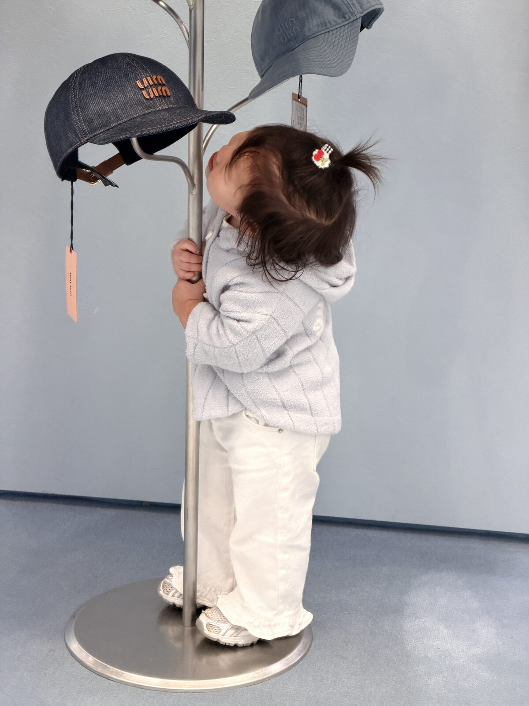
Chanel 馬德里旗艦店,經典的「藝術家工作室」陳列概念 —— 桌面下是整排 Aquatec 牌壓克力顏料管被壓在玻璃下,象徵 Chanel 跟現代藝術的連結。Coco Chanel 一直把品牌定位成「現代藝術運動的一部分」,這個顏料桌是全球 Chanel 旗艦店的固定裝飾。
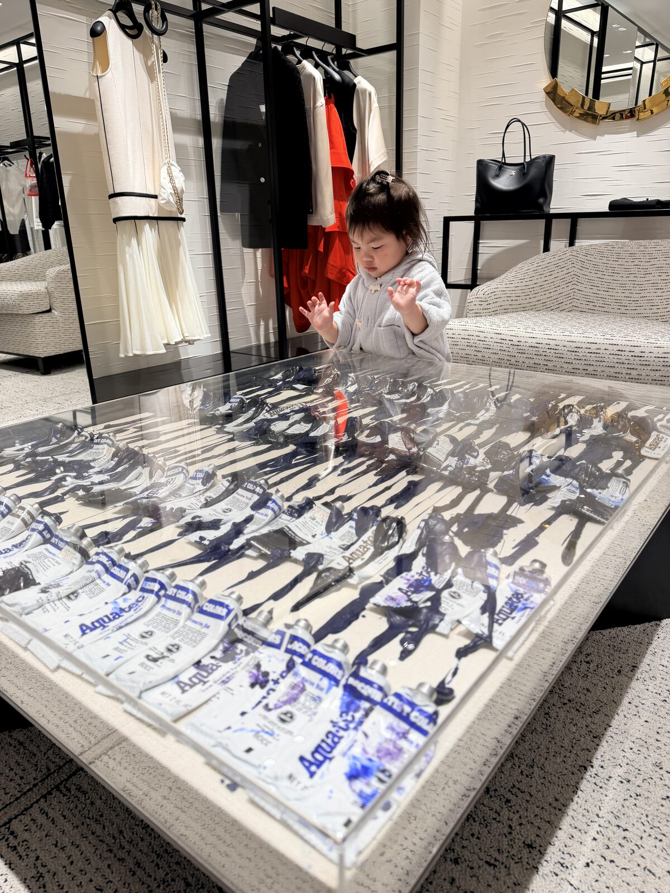
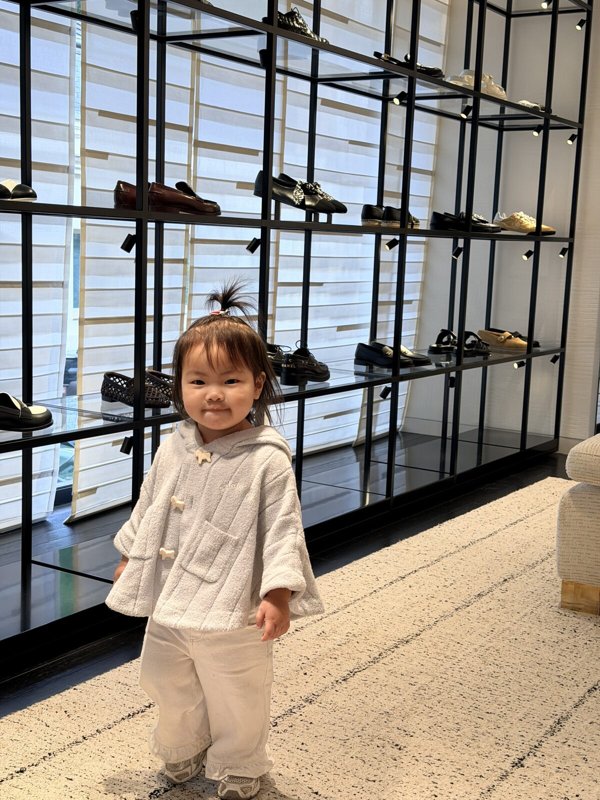
整天最高級的素材 —— LV 旗艦店的 Heritage Hot Stamping & Personalisation 服務。專業職人現場手繪在 LV monogram 帆布上,我們親眼看到字母「LOUIS、X.K、Q.T、H、W、P、Y、O、R」+ 櫻花 + 繡球花 + 撲克牌 + 高爾夫球桿 + 萬神殿 —— 全部都是手繪。
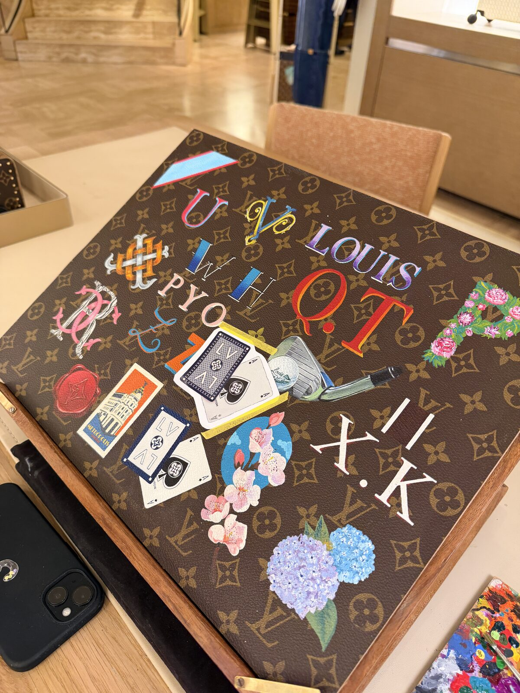
那塊沾滿顏料的調色盤 + 整排 Louis Vuitton 專用顏料瓶(瓶身真的印 LOUIS) = 真實工作中的職人桌。
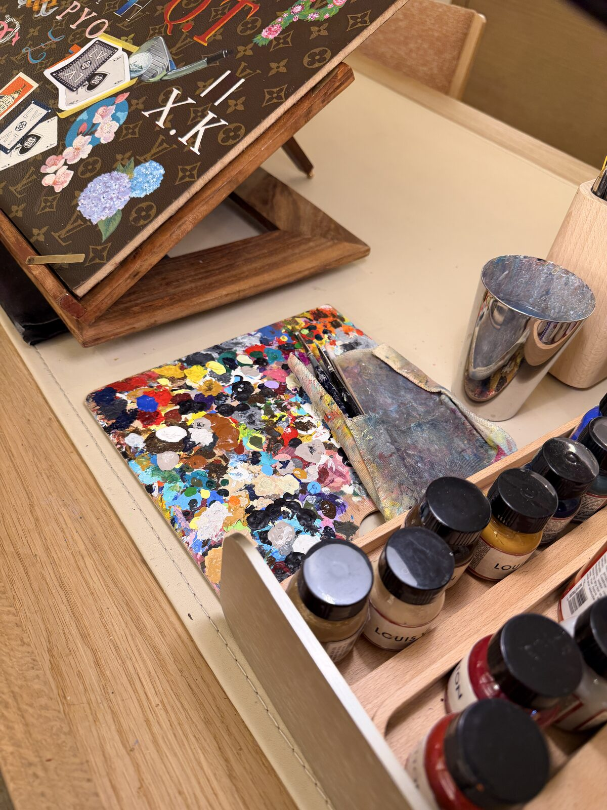
我跟駐店畫家直接聊起來 —— 她 24 歲、長得很漂亮、英文好、技術好,跟我介紹工作流程,還讓小米坐在工作台旁邊塗鴉。同時老婆趁機把想買的全部拿到櫃台,完成了 distraction shopping 的完美三角分工。
LV 旗艦店的隱藏玩法:
老公:跟 24 歲駐店畫家聊到忘我
小米:被請去工作台旁邊塗鴉
老婆:趁機把想買的全部拿到櫃台
這個三角分工,連 Louis Vuitton 自己都沒想到。
順帶一提,我也偷瞄到 Swatch × Audemars Piguet Bioceramic Royal Oak 聯名 —— 2025 年底 Swatch 集團繼 MoonSwatch 之後的第三波 hype 表,售價約 400 €,比真 AP 便宜 250 倍 😂。5/16 在巴黎完全有機會 —— Champs-Élysées 那間 Swatch 旗艦店配額最大。
逛完精品街往南走,到了 阿卡拉門(Puerta de Alcalá) —— 1778 年的新古典主義凱旋門,卡洛斯三世為了紀念自己進城而建,比巴黎凱旋門還早 50 年。
門上拉丁文寫著「REGE CAROLO III · ANNO MDCCLXXVIII」(卡洛斯三世國王 · 1778 年)。一家三口合照,小米推車裡睡死,大人在地標前微笑 —— 最完美的對比畫面。
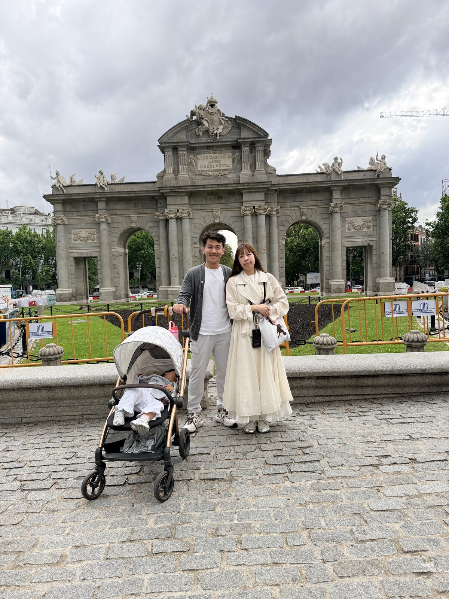
進到 Retiro 公園邊上,有一座 Fuente de los Tritones y Galápagos(海豚與烏龜噴泉) —— 1832 年伊莎貝拉二世小時候蓋的,慶祝她受洗。米白風衣 + 古典雕塑 + 灰天氣 = 整個氛圍很歐洲文學。
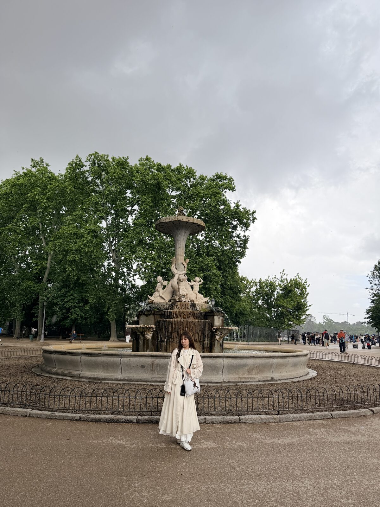
從 Retiro 走出來繞回阿卡拉門 —— 雨剛停 + 太陽透出來 + 左上角還有一道彩虹色光暈。這個極稀有的天氣現象叫「Iridescence / nube iridiscente(雲彩虹)」,要陽光剛好穿透雲中冰晶才會出現。
烏雲 + 藍天 + 黑色轎車駛過反光路面 + 阿卡拉門逆光剪影 —— 這張根本是電影開場第一個鏡頭。
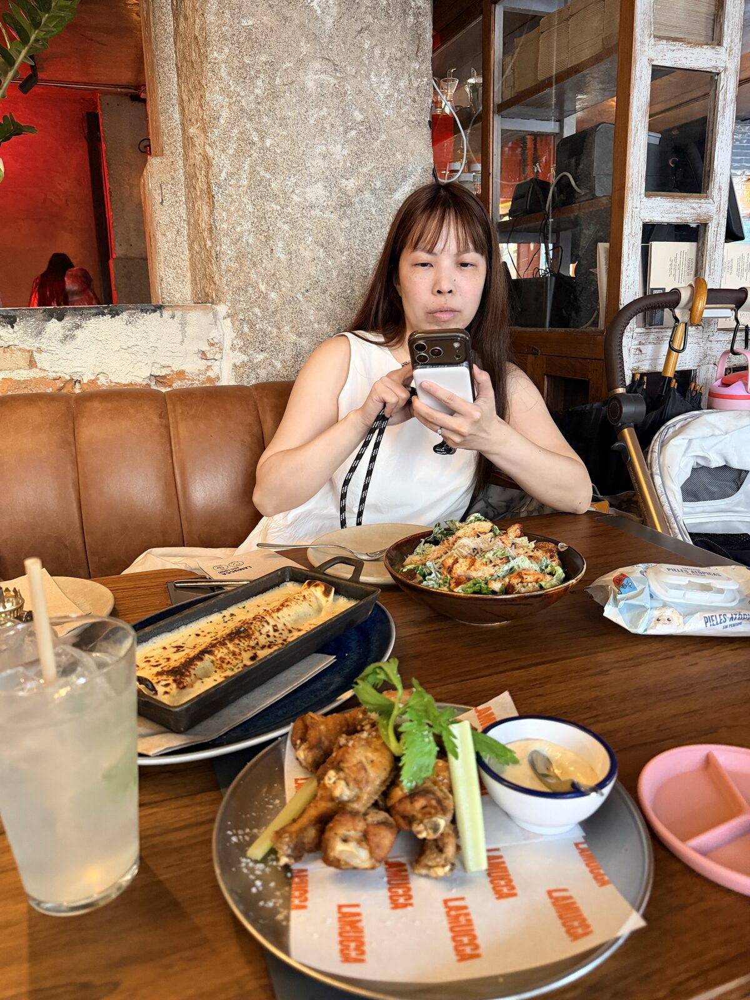
馬德里的雨追了我們一整天。
但每次雨停,都剛好站在地標前。
傍晚回程經過 Torres de Colón(哥倫布雙塔) —— 1976 年的怪建築,馬德里人暱稱「El Enchufe(插頭)」,因為頂部像兩個插頭。由上往下蓋的工法:先蓋頂部塊狀體,再用繩索把樓板掛下來,當時的工程創新。
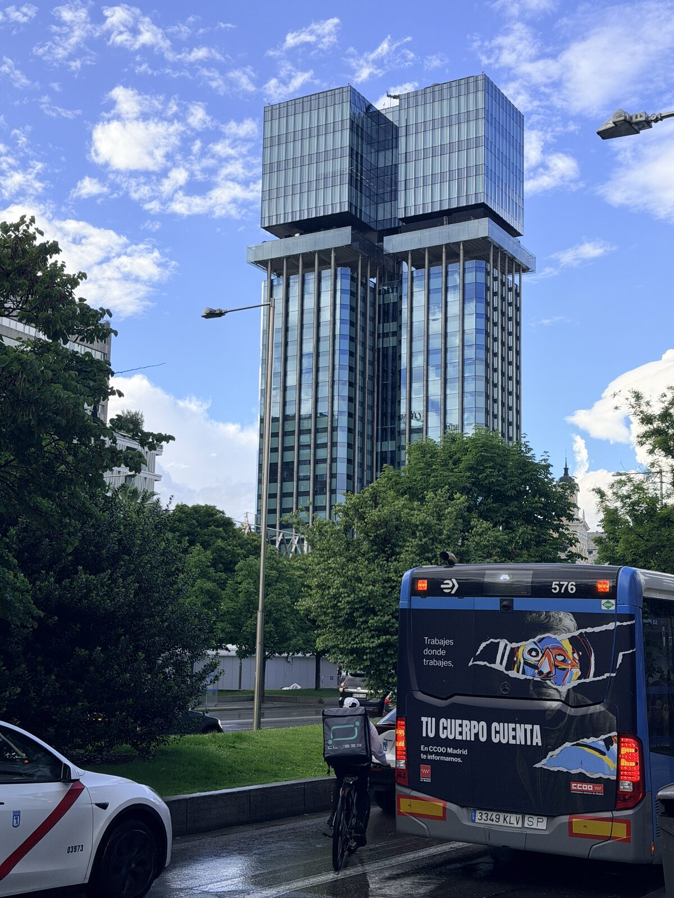
同一棟 Metropolis,早上拍是陰天 + 灰雲 + 雨後路面的 moody 版,傍晚拍是藍天 + 太陽斜射 + 金色雕飾發光的 golden hour 版 —— 同一棟樓兩個情緒,Day 6 的天氣 plot twist 圓滿了。
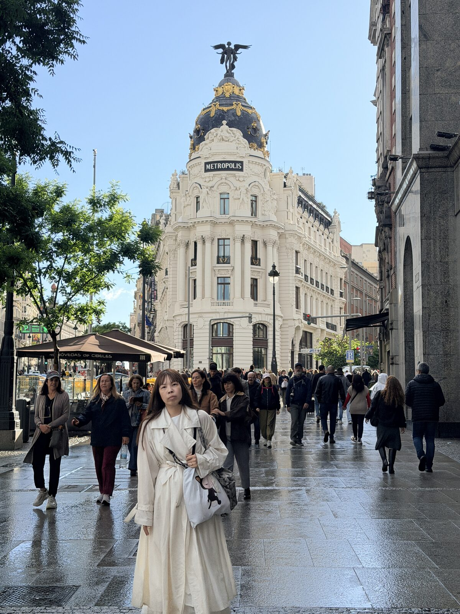
晚餐選在 La Mucca · Plaza del Carmen 5 —— 馬德里在地連鎖,Pizza + 西班牙菜混血,氣氛超好、辨識度最高的橘色雨遮 + BREAKFAST LUNCH DINNER 透明貼字。
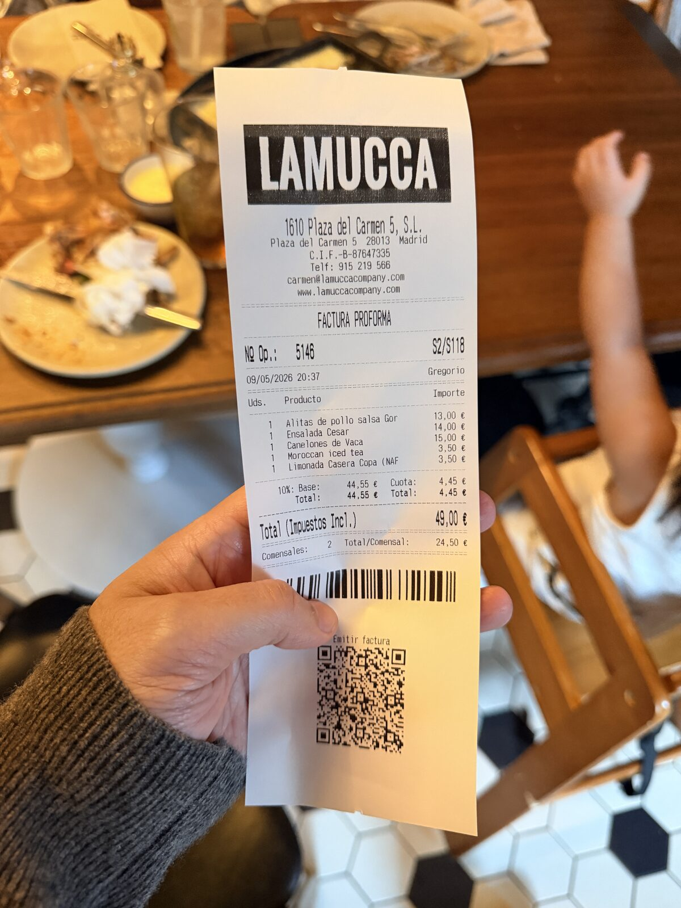
Alitas de Pollo salsa Gorgonzola(戈貢佐拉雞翅) 13 € —— 鹹香重口味的義式藍紋起司醬配炸雞翅,沾著吃鹹香爆炸,小米的雞翅之夜;Ensalada César(凱薩沙拉) 14 € —— La Mucca 的招牌,大塊麵包丁 + 雞肉條 + 帕瑪森,份量超大;Canelones de Vaca(牛肉焗烤義大利捲) 15 € —— 加泰隆尼亞傳統菜,手工 pasta 包牛肉餡 + Béchamel 白醬 + 焗烤,La Mucca 的 hidden gem。
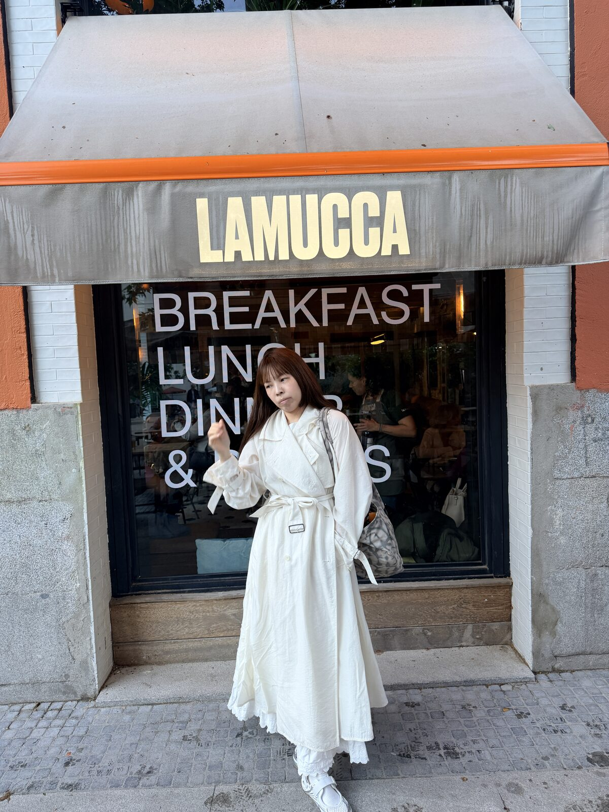
飲料兩杯:Moroccan Iced Tea(摩洛哥薄荷冰茶) + Limonada Casera(自製檸檬水) —— 完美的「無酒精蕁麻疹友善組合」。
| 品項 | 備註 | 價格 |
|---|---|---|
| Alitas de Pollo salsa Gor | 戈貢佐拉雞翅 | 13,00 € |
| Ensalada César | 凱薩沙拉 | 14,00 € |
| Canelones de Vaca | 牛肉焗烤義大利捲 | 15,00 € |
| Moroccan Iced Tea | 摩洛哥薄荷冰茶 | 3,50 € |
| Limonada Casera Copa | 自製檸檬水 | 3,50 € |
| Total | (含 IVA 10%) · 24,50 €/人 | 49,00 € |
回飯店路上隨手拍 —— Hotel Mayorazgo(Calle Flor Baja),Plaza España 旁的設計型旅館。整棟建築立面,每扇窗框都嵌 LED 霓虹燈條:薄荷綠 / 桃紅 / 螢光黃 / 橘紅 / 萊姆綠,藝術家 Gonzalo Lebrija 的裝置作品 *Ventanas de Color*。
馬德里少數會在傍晚自動點亮的建築立面藝術 —— 只有住附近、走 Plaza España 才會發現。
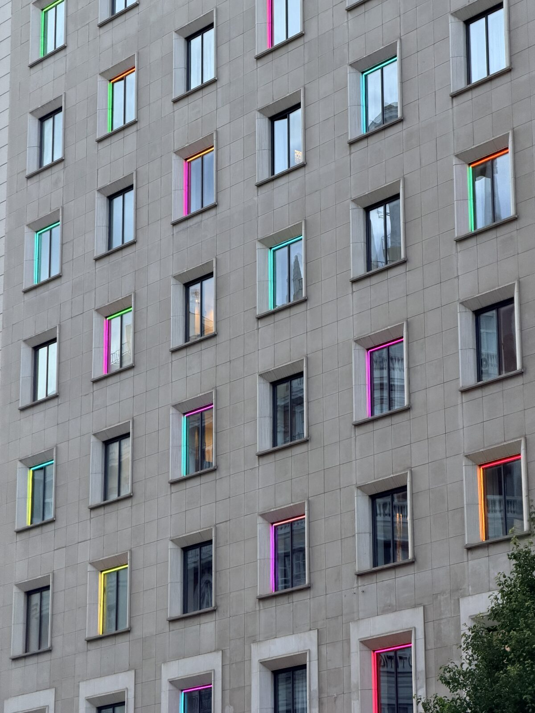
從早上 Frutería Vitaminas 的西瓜招牌,
到傍晚 Hotel Mayorazgo 的霓虹彩窗 ——
「色彩」是 Day 6 的隱形主線。